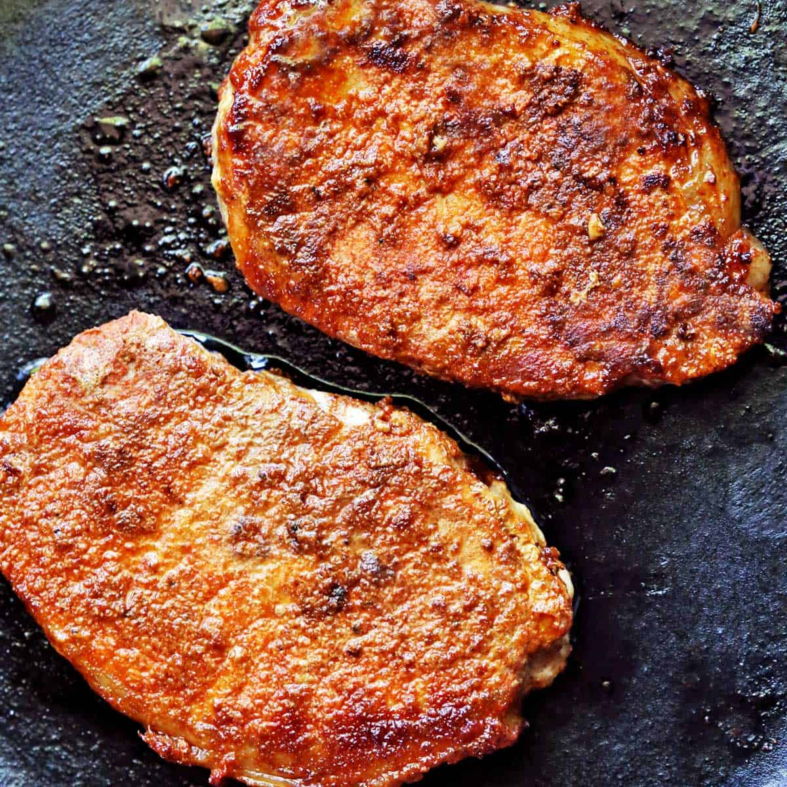

Baked Pork Chops

Description
These easy baked pork chops always turn out tender and juicy. The creamy
sauce is delicious served over rice or mashed potatoes — and you probably
have all the ingredients on hand.
Ingredients
- 6 thick cut pork chops
- 1 teaspoon garlic powder
- 1 teaspoon seasoning salt
- 2 egg, beaten
- ¼ cup all-purpose flour
- 2 cups Italian-style seasoned bread crumbs
- 4 tablespoons olive oil
- 1 (10.5 ounce) can condensed cream of mushroom soup
- ½ cup milk
- ⅓ cup white wine
Steps
- Preheat the oven to 350 degrees F (175 degrees C).
-
Season pork chops with garlic powder and seasoning salt. Place beaten
eggs in a small bowl. Dredge pork chops lightly in flour; dip into
beaten egg, then press into bread crumbs to coat both sides.
-
Heat oil in a medium skillet over medium-high heat. Add breaded pork
chops and cook until golden brown, about 5 minutes per side; transfer to
a 9x13-inch baking dish and cover with foil.
-
Bake in the preheated oven for 1 hour. Meanwhile, mix condensed soup,
milk, and white wine in a medium bowl until well combined; pour soup
mixture over pork chops. Replace the foil, and continue to bake for
another 30 minutes.